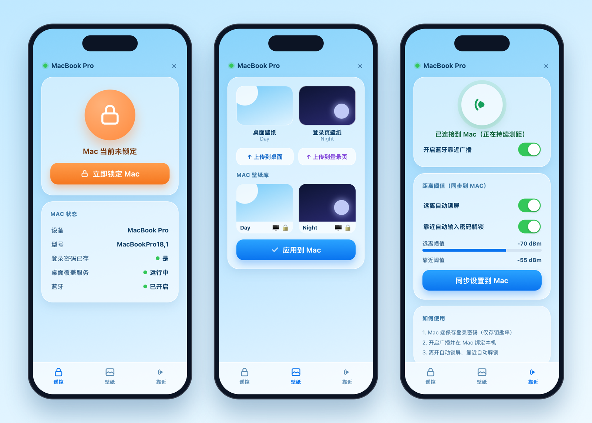
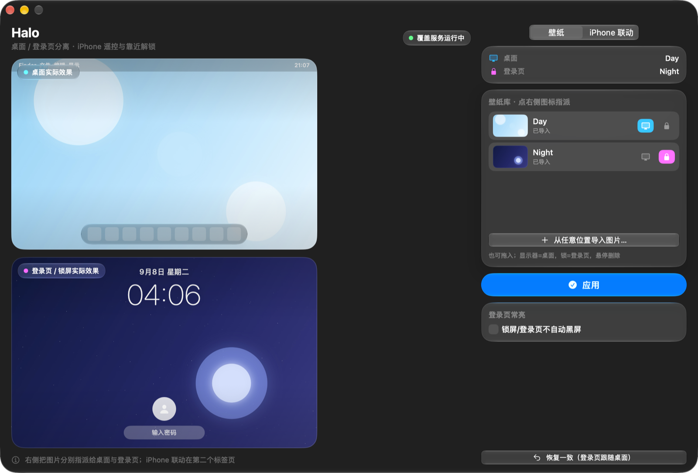
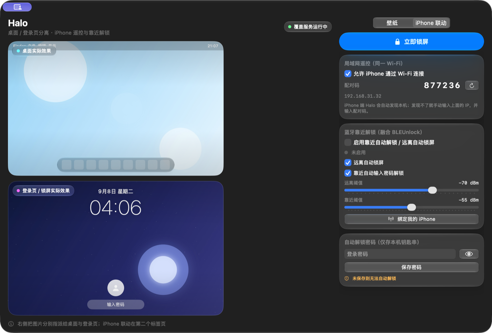
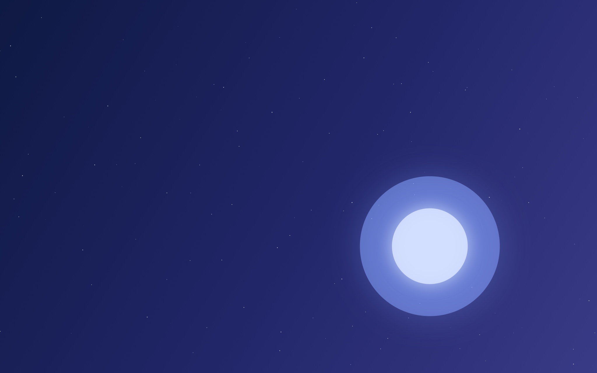

iPhone 就是你的 Mac 遥控
遥控锁屏、远程换壁纸 / 相册上传、蓝牙靠近自动锁解，三个页面一目了然。




功能
一个菜单栏小工具 + 一个手机遥控，把「壁纸分离」和「人走即锁、人来即开」做稳。
🖥️
双壁纸独立Mac
桌面与登录页各用一张，铺满全屏、互不影响，重启后自动保持。
📊
纯菜单栏常驻Mac
关窗后 Dock 不显示，只在菜单栏运行，点图标即可重开、锁屏或退出。
🧩
稳定不拉锯Mac
公开接口 + 用户态桌面层，不关 SIP、不要 root，不会被系统改回去。
🔒
一键远程锁屏iPhone
同一 Wi‑Fi 自动发现 Mac，手动也可输入 IP，点一下立即锁定。
🖼️
远程换壁纸iPhone
手机浏览 Mac 壁纸库、分别指派桌面 / 登录页，还能从相册直接上传。
📶
蓝牙靠近锁解iPhone
iPhone 广播 BLE、Mac 按信号强度测距，离开锁屏、靠近自动输密码解锁。
安装与使用
Mac 拖入即用；iPhone 为未签名 IPA，用自签工具重签侧载。
🖥️ Mac（Halo）
- 到 Releases 下载
Halo.zip，双击解压得到Halo.app。 - 把
Halo.app拖进「应用程序」文件夹。 - 首次右键 → 打开（未公证，第一次需右键，之后可双击），并允许「本地网络 / 蓝牙」权限。
- 导入图片，分别点 🖥️ / 🔒 指派桌面与登录页，点「应用」，按
Control + Command + Q锁屏查看。
📱 iPhone（HaloRemote）
- 从 Releases 下载
HaloRemote-unsigned.ipa（未签名 arm64，全能签主用）；若签名工具要求包本身带签名，改用HaloRemote-adhoc.ipa。 - 用「全能签」等自签工具导入并用自己的证书重签、安装到 iPhone（两个包内容一致，只差是否带 ad-hoc 占位签名）。
- 首次打开在「设置 → 通用 → VPN 与设备管理」信任开发者证书。
- 与 Mac 连同一 Wi‑Fi、开蓝牙，输入 Mac 上的 6 位配对码即可连接。